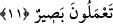

Kim Hak’tan bir ses işitirse,
Kendi içinde mutlak suskun olur
Allah’ım kelâmını bize duyur.
“Ona demiri yumuşattık.” “__WORD__ (yumuşaklık)” sertliğin zıddıdır. Cisimler hakkında,
sonra mecâzen mânâlar için kullanılır. Yâni demiri ateşte kızdırmadan ve çekiçle
dövmeden elinde istediği gibi evirip çevirdiği sanki mum, hamur ve nemli balçıkmış
gibi ona yumuşattık. Yahut Dâvud (a.s.)’a verdiğimiz kuvvete nisbetle demiri ona diğer
beşerî kuvvetlere nisbetle mum gibi yaptık, demektir. Dâvud (a.s.) cüsseli biri
olmamakla birlikte pek kuvvetli idi. Sâd sûresinde Dâvud (a.s.) hakkındaki “kuvvet
sahibi” (Sâd, 38/17) ifâdesiyle ilgili iki yorumdan birisi de budur.
11. Geniş zırhlar imal et, dokumasını ölçülü yap. (Ey Dâvud hanedanı!) Sâlih
ameller işleyin. (İyi işler yapın) Şüphesiz ben, yaptıklarınızı görmekteyim, diye
(vahyettik).
“Geniş” tam geniş ve uzun “zırhlar imal et” diye emrettik.
el-Kâmûs’ta der ki: “__WORD__ Bir şey yere kadar uzadı demektir. Nimetle
beraber kullanıldığında nimetin geniş olması anlamındadır. “__WORD__
” tam ve uzun zırh
demektir.” “__WORD__ (abdesti eksiksiz ve tam almak)” ve “__WORD__ (nimeti tam/bol
bol vermek)” ifâdeleri ondan mecaz olarak kullanılmıştır. Nitekim el-Müfredât’ta böyle
geçmektedir.
İlk zırh yapan Dâvud (a.s.)’dır. Bundan önce zırhlar dövülmüş demir plakalar
halindeydi. Denilir ki Dâvud (a.s.) İsrailoğullarına kral olunca tebdîl-i kıyâfetle halk
arasına çıkar dolaşır ve insanlara: “Dâvud hakkında ne dersiniz?” diye sorardı. Onlar
da Dâvud (a.s.)’ı överlerdi. İşte Allah Teâlâ ona insan sûretinde bir melek gönderdi.
Dâvud (a.s.) âdeti üzere o meleğe de sordu. Melek: “Ne iyi adamdır. Ah bir hasleti
olmasa!” dedi. Dâvud (a.s.) bu hasletin ne olduğunu sordu. Melek: “Keşke beytü’l-
mâlden kendisi yemese ve âilesine de yedirmese. Eğer kendi el emeğiyle kazanıp
bundan yese fazîletleri tamam olur.” dedi. İşte o zaman Dâvud (a.s.) Rabbi’nden
kendisini beytü’l-mâl’den müstağnî kılacak bir maîşet sebebi yaratmasını taleb etti.
Allah Teâlâ da ona zırh yapma sanatını öğretti. Dâvud (a.s.) her gün bir zırh yapar ve